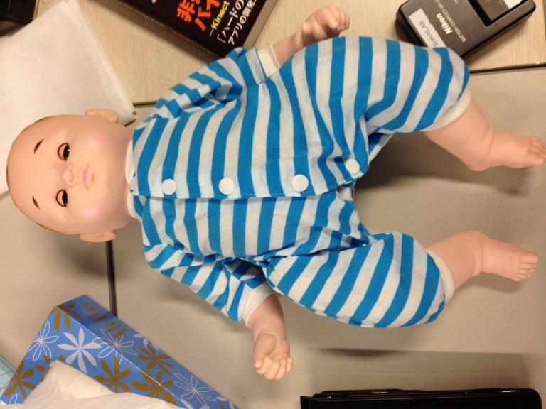
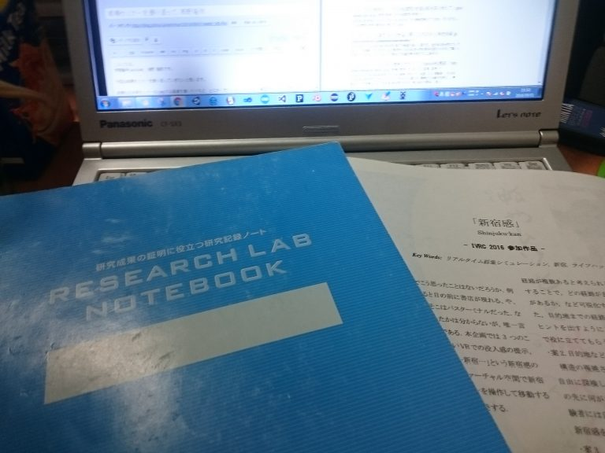
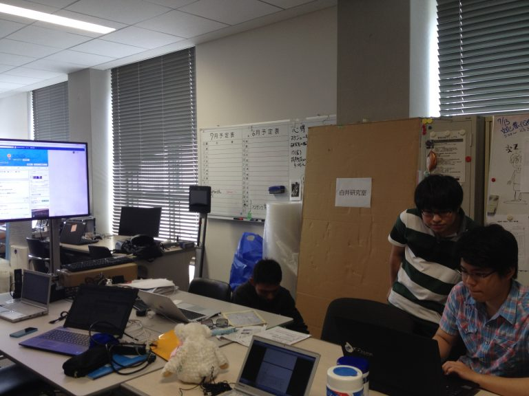
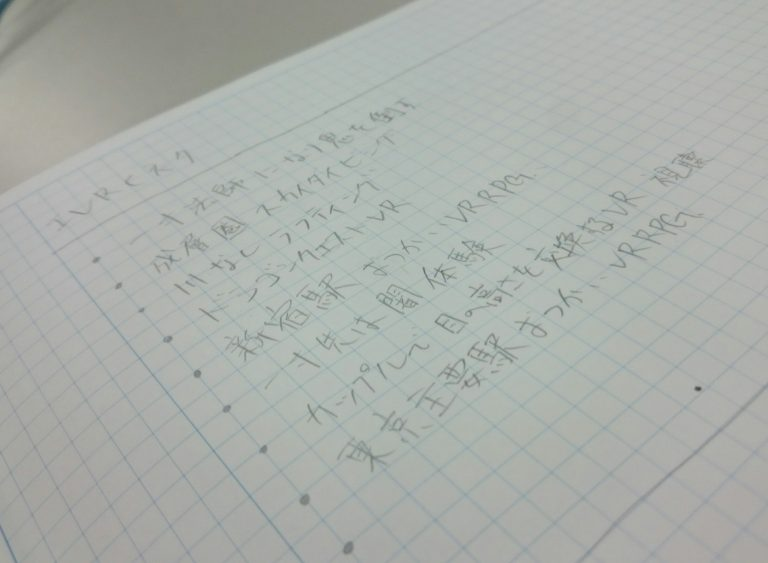
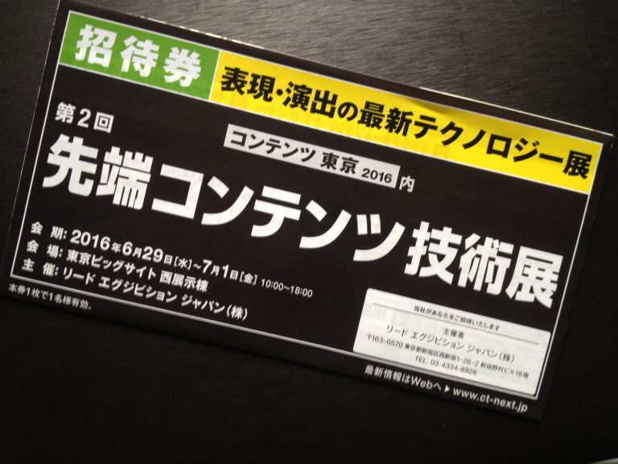
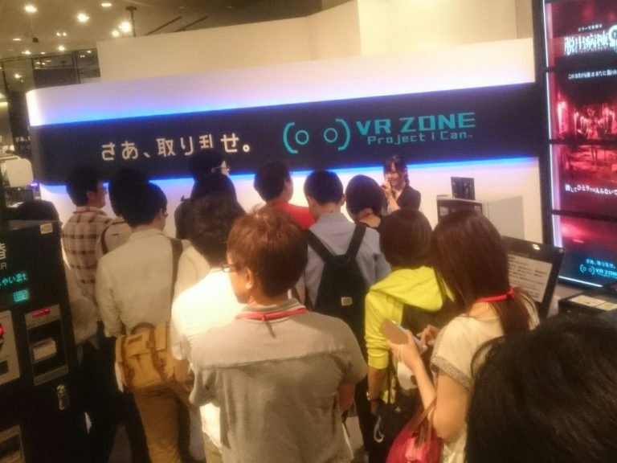
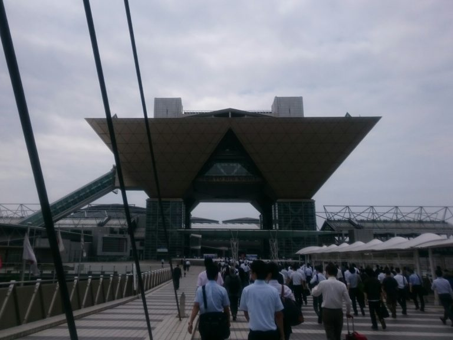

News
-
内藤 翔太 wrote a new post, 前期セミナーを振り返って 内藤翔太, on the site 白井研セミナー 3年 10か月前
今回は前期の白井セミナーを振り返ってみます。
前期のセミナーでは出来ないことが多かったのが悔やまれます。
すぐ思い出すだけで出来なかったことは
「小まめにブログを書けなかった。」
「グループディスカッションで積極的に話し合いが出来なかった。」
「情報の共有が出来なかった」
と言うことが上げられます。
「小まめにブログを書けなかった。」
は、最初に次週までのセミ[…]
-
錦澤 竜也 wrote a new post, 錦澤、前期セミナーを振り返る。, on the site 白井研セミナー 3年 10か月前
1423115錦澤です。前期セミナーを振り返りたいと思います。
第１回 メンバー顔合わせ、ブログの書き方、自己紹介
第１回では、セミナーのルールとか、ブログを書くときのルールを知りました。第１回のブログのレビューでは、タイトルをもっと考えようということでした。
第２回 ESの書き方、戦略と戦術の違い
先輩のESを例にしてESの書き方を考えていった。ESを書くときは、応募理由は構造的な作文を心がげ、また結[…] 
-
浅野 隆弥 wrote a new post, 前期セミナーを振り返って 浅野隆弥, on the site 白井研セミナー 3年 10か月前
こんにちは。
学籍番号1423145 浅野 隆弥です。今回は前期セミナーを振り返ってい[…] 
-
望月 宥冶 wrote a new post, 第12回セミナー 1423089 望月 宥冶/体験の設計, on the site 白井研セミナー 3年 10か月前
こんにちは。
1423089の望月です。今回のセミナーでは、プロジェクトの人員、予算、スケジュールを確認したあとに、この企画のレベルデザインについて考えました。
レベル0 自分の赤ちゃんです
レベル1 抱っこできる
レベル2 腹が減る もらす その他不機嫌 → 泣く パラメータ
レベル3 双子にする。性格特性の理解
ゴール地点 問いかけ(愛情が湧いたかどうか)という風に[…] 
-
望月 宥冶 wrote a new post, 第11回セミナー 1423089 望月 宥冶/遊びについて, on the site 白井研セミナー 3年 10か月前
こんにちは。
1423089の望月です。第11回セミナーでは、神奈川県立青少年センター指導者育成課の清水さんと名刺交換をし、その後、遊びについて考えました。私にとっての遊びとは、ひとつのコミュニケーションツールであると考えていましたが、そういった意味のほかにも人間の娯楽に作用するようにデザインされたシステムであり、いつでも好きなときにやめることができるといったような遊びについての定義付けをしました。私の大学での学習内[…]

-
内藤 翔太 wrote a new post, 第13回セミナー 内藤翔太 記入漏れブログの記入, on the site 白井研セミナー 3年 10か月前
書いてなかったブログのいくつかを今回書きました。
今回書いたのは7月6日第11回の「名刺・遊びについて」と7月13日の「タイトルロゴの制作」の2つです。
以前受けたTOEICの点数が曖昧なので空白にして、後で記入することにしました。
また、遊びについてで書いた「指スマ」のルールが曖昧になっていることがあったので調べたところ懐かしさと指スマの楽しい思い出からテンションが上がり自分でも驚くほど筆が進みました。[…]
-
内藤 翔太 wrote a new post, 第10回セミナー 内藤翔太 IVRCの反省と次週の名刺作成, on the site 白井研セミナー 3年 10か月前
IVRCの結果は残念ながら「新宿チーム」は不合格でした。
単なるウォークスルーコンテンツにしか見えないと言うことだそうです。
新宿駅内で足を動かさないで動くといったものなら良かったのかもしれませんがそれでは面白味がありませんなので移動に関してのハードに力を入れれば合格に近づいたのかもしれません。
なので、どういったものならさらに良くなったのかを自分なりに考えてみました。
一番の問題は先程言った通り移動に[…]

-
内藤 翔太 wrote a new post, 第11回セミナー 内藤翔太 名刺交換と遊びについて, on the site 白井研セミナー 3年 10か月前
第11回では神奈川青少年教育センターの方が訪問してくださいました。
神奈川青少年教育センターの方曰く最近の子供たちは３間（さんま）のせいにより外で遊ぶことがなくなってきたということです。
３間というものは
１、空間･･･公園の減少、公園ルールの厳重化、公園利用者の高齢化
２、時間･･･塾、クラブなどの利用の増加
３、仲間･･･塾、クラブなどの利用により友達の減少
の3つの間のことだそうです。[…]

-
内藤 翔太 wrote a new post, 第九回セミナー 内藤翔太 企画書レビュー4と名刺の書き方, on the site 白井研セミナー 3年 10か月前
今までのIVRCの企画書で出来ないことが多かったです。
発言できない、手伝いが出来ない、グループディスカッションも出来ない。
そんなことが多かったです。
しかし、卑怯者と言われないようになにか、簡単なものでも出来るものを探していきます。
名刺のレイアウト
次回名刺を作るために自分の名刺のレイアウトを考えることになりました。名刺には（名前、大学名、学部名、学科名、メールアドレス書き、対角線[…]

-
内藤 翔太 wrote a new post, 第八回セミナー 内藤翔太 企画書レビュー3, on the site 白井研セミナー 3年 10か月前
企画書レビュー第3弾
今回は見直してくるとアイデアが出る。と言うことなので見直しをしました。
すると、前から問題になっていた移動の入力ハードのアイデアをみんなで出しました。
出たアイデアは
「ルームランナー＋スマホ」で「新宿歩きスマホ」
「バランスWiiボード」で「新宿セグェイ」
「ステッパー」で「新宿ウォーク」
「乗馬マシン」で「新宿ロデオ」
と言うアイデアが出ました。[…]
-
内藤 翔太 wrote a new post, 第六回セミナー 内藤翔太 企画書レビューと就職活動, on the site 白井研セミナー 3年 10か月前
今回は企画書の書き方について
企画書を書くときには審査員を意識して書くようにとのことです。
三人いる審査員の中のうち二人は「なんか普通だな」「これ面白いか?」と思っていても一人が笑いながら「これ最高！」と審査員と書き手のフィロソフィー（哲学。ものの見方、考え方）が一致するように。これが戦術てきな企画書ではなく戦略的な企画書の書き方だそうです。
就職活動について
最初、「ゲーム会社に必ず入りたい」といった[…]

-
浅野 隆弥 wrote a new post, 第三回セミナー 1423145 浅野隆弥/Nerd、就活勝利条件を考える。, on the site 白井研セミナー 3年 10か月前
こんにちは、
1423145の浅野隆弥です。第3回セミナーではIVRCのネタ出しとグループディスカッションの攻略方について学びました。
まずIVRCのネタ出しでは、それぞれがザックリとした企画を考えてきて、それを2回発表をしました。
1回目は自分が持ってきたものをそのまま発表し、2回目は周りの案を聞いて面白そうなものを取り入れて発表という流れでした。
アイデア出しはブレインストーミングが使われるイメージなの[…]  -
望月 宥冶 wrote a new post, IVRC紹介：2011年。注目作品はI Shadow, on the site 白井研セミナー 3年 10か月前
こんにちは。
1423089の望月です。IVRC2011では神奈川工科大学から出展した「I Shadow」という作品が「クリスティ・デジタル・システムズ賞」を受賞しています。この年度を選んだきっかけとし[…]

-
錦澤 竜也 wrote a new post, 第4回セミナー 大学生という時間・IVRCディスカッション, on the site 白井研セミナー 3年 10か月前
学籍番号1423115 錦澤です。
第4回セミナーのまとめを書いていこうと思います。
第４回セミナーでは各々が一押しの企画を提示して、３つの案に絞ることをしました。
それぞれの企画に対して、可能なこと不可能なこと、その作品を体験することで学べることや得られることを考えていきました。
みんなの意見を聞いていると、しっかりとコンセプトや企画の見どころを考えていて感心を覚えました。
討論を通して自分の企[…]
-
望月 宥冶 wrote a new post, 1423089 望月 宥冶/コンテンツ東京に潜入, on the site 白井研セミナー 3年 10か月前
こんにちは。 望月です。
6月29日~7月1日に東京ビックサイトで開催されていた「コンテンツ東京2016」に参加してきました。
IVR展で展示されていたものの他に様々な技術が展示されていました。今回はその中でも気になったものを紹介していきたいと思います。
IDEALENS
パソコンもスマホも使わずに動作するHMDということで、とても注目できる商品だと思います。また、ケーブルがないとこ[…] 
-
浅野 隆弥 wrote a new post, 東京遠征③ 浅野 隆弥/Nerd、コンテンツ東京に行く, on the site 白井研セミナー 3年 10か月前
こんにちは、浅野隆弥です。
今回はコンテンツ東京に行ってきたのでそのことについて記事にしたいと思います。
コンテンツ東京はこの前のIVR展と同じように、VRやAR、インタラクティブ技術、ロボットなどの最先端技術が出展。エンターテイメントと最先端を結ぶ新しい商談展となっています。
商談展なのでスーツの人が多く場違いな気がしましたが、前回のIVR展よりはまだましといった雰囲気でした。ここでも気になったものを紹[…]

-
浅野 隆弥 wrote a new post, 東京遠征② 浅野 隆弥/Nerd、VRを体験する, on the site 白井研セミナー 3年 10か月前
後半はVRZONEについてです。
VRZONEでは脱出病棟Ωとアーガイルシフト以外をやりました。
スキーロデオと高所恐怖Showとトレインマスターとリアルドライブの4つですね。やった順番で行くとスキーロデオからなのですがスキーロデオは色々と語りたいことがあるので最後に回して、他からいきます。
という訳で高所恐怖Showからいきます。
「たった一歩が踏み出せねぇ!!」というキャッチコピーでしたがまさに[…] 
-
望月 宥冶 wrote a new post, 第7回セミナー 1423089 望月 宥冶/企画書レビュー会, on the site 白井研セミナー 3年 10か月前
こんにちは。
1423089の望月です。今回のセミナーでは企画書のレビュー会を行いました。レビューの要素として新規制・技術的挑戦・体験のインパクトを評価し合いました。自身で企画書を書いている最中に、他人の企画書について評価することは、とても良い経験になり、他人の企画書を読んで思った良かったところ、改善点などが自分の企画書の中でも活かすことができ、お互いに高め合うことのできる期間だったのだと感じています。
以上第7回セミナーでした。

-
望月 宥冶 wrote a new post, 第6回セミナー 1423089 望月 宥冶/魅力ある概要の書き方, on the site 白井研セミナー 3年 10か月前
こんにちは。
1423089の望月です。今回は企画書概要の書き方について学びました．概要は大きく3つのパートに分け、第1パートでは作品を一言で表すこと、第2パートではその作品をどうやって技術的に表現するのか、第3パートでは体験者がどういった読後感をもつのか。上記3点を意識しながら、第2パートで文字数調整を行いながら書くと、良い概要に仕上がるそうです。実際に企画投稿の際には、こういったことを意識しながら行いたいです。[…]

-
浅野 隆弥 wrote a new post, 東京遠征② 浅野 隆弥/Nerd、IVR展に行く, on the site 白井研セミナー 3年 10か月前
こんにちは。浅野 隆弥です。
6月24日にIVR展とVR ZONEに行ってきたので、そのことについてレポートしたいと思います。[…] 
- もっと読み込む